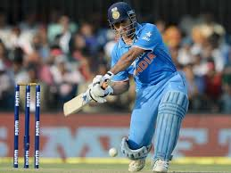
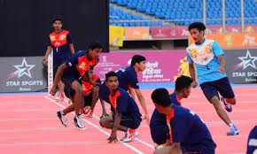
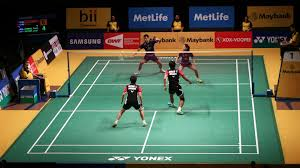

1.Cricket
About the game: Two teams of eleven players each compete in the bat-and-ball game of cricket. A 22-yard pitch has a wicket at each end made up of two bails perched above three stumps.
How to play: To score as many runs against the opposition as you can is the primary goal in cricket. In order to prevent the opponent from scoring, one team will bowl and field the ball while the other will take turns batting and scoring runs.
Played by: It is played between 11 players each in two teams.
2.Football

About the game: Football is a game in which two teams of 11 players try to pass the ball into the goal of their rivals.
How to play: In a 90-minute game, the purpose of football is to score more goals than your opponent. A ball is placed in the centre of the field and when the referee blows the whistle, a player from the team that lost the coin toss takes the kick-off, and the ball advances.
Played by: It is played in two teams of 11 players each
3. Kho-Kho
About the game: One of the earliest outdoor games in India, kho-kho is a traditional Indian game that dates back to prehistoric India. A vertical wooden post is located at each end of the 29 by 16-meter rectangle that serves as the kho-kho playing area.
how to play: Beginning at the pole, the chaser must attempt to tag a defender on their side of the field. When a defender crosses the line to the opposing side, the chaser taps a teammate who is seated facing the other way and shouts, "Kho!" The teammate will next attempt to tag the defender as the next move. Played by: It is played by 12 players in each team4. BasketBall

About the game: Basketball can be played on courts that are both indoors and outside. It is a team sport in which two teams compete for points by attempting to pass the ball into a hoop.
How to play: In order to score, two teams of five players each attempt to put the ball through a hoop that is 10 feet off the ground. The court, where the game is played, is a rectangular surface with hoops at each end. The mid-court line divides the court into two primary halves
Played by: It is played by two teams consisting of 5 players each
5.Badminton
About the game: In the racket sport of badminton, quick wrist and arm motions are necessary. A feathered shuttlecock is used to play it.
How to play: Two opposing players place themselves on the opposing sides of the net-separated rectangle that serves as their court. In order to get points, players must hit a shuttlecock with their racket so that it crosses the net and lands on the court's opposite half
Played by: It can be played by two opposing players (singles) or two opposing pairs (doubles).